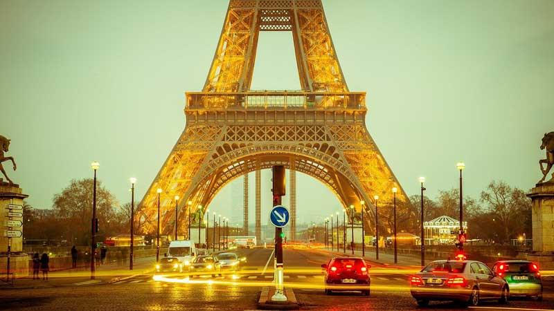
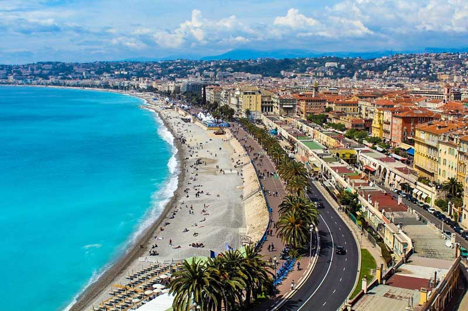
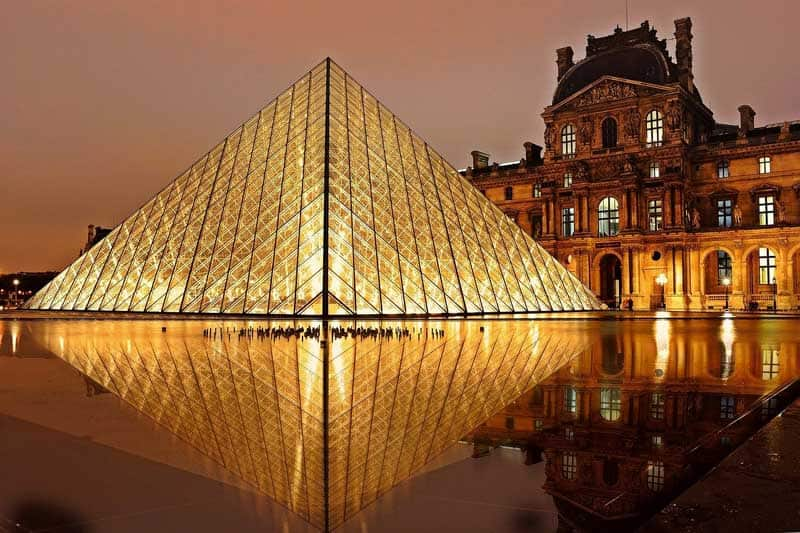
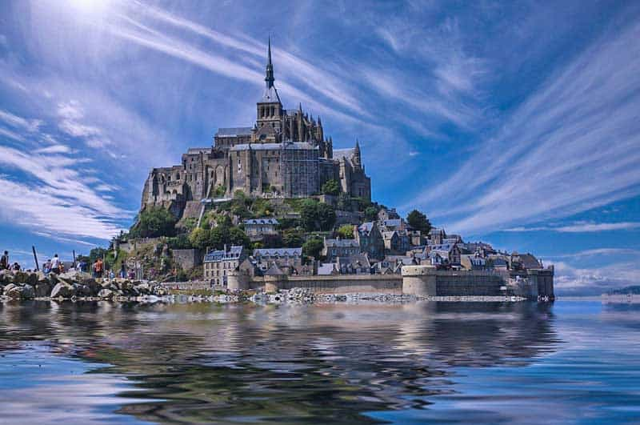

Here are my Top list places to visit in France that surely worth every pennies of yours

In 1889, Paris hosted an Exposition Universelle (World’s Fair) to mark the 100-year anniversary of the French Revolution.

a sun-soaked stretch of coastline that skirts the Mediterranean in the southeast corner of France.

It is located on the Right Bank of the Seine in the city's 1st arrondissement.

is a tidal island and mainland commune in Brittany, France. The island lies approximately one kilometer.